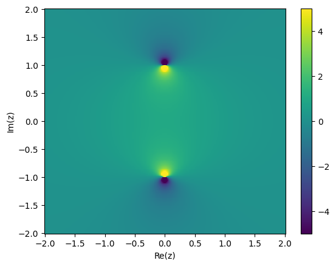

6. Complex analysis fundamentals#
6.1 Motivation#
In smooth quadrature, we saw that many of the error bounds depended on some high derivative of the function to be integrated. For example,
the (simple, not composite) trapezoidal rule had
\[ \left|\int_a^b f(x) \mathrm{d} x - \frac{b-a}{2}[f(a) + f(b)]\right| \leq \frac{1}{12} ||f''||_{L_{\infty}}(b-a)^3. \]Gauss–Legendre quadrature (with \(n+1\) nodes indexed from \(0\) to \(n\)) has
\[\left|\int_a^b f(x) \mathrm{d} x - \frac{b-a}{2}[f(a) + f(b)]\right| \sim \frac{f^{(2n+2)}}{(2n+2)!}.\]
The right-hand-sides above are reminiscent of terms in a Taylor expansion, e.g. consider the Taylor expansion of \(f(z)\) around \(z = 0\),
6.1.1 KL divergence#
For probability distributions \(p\) and \(q\), the KL divergence is defined as
6.1.2 Bayesian evidence#
On the topic of Bayesian inference, the quantity appearing in the denominator in Bayes’ theorem is the Bayesian evidence,
how likely a model is to produce the data we observed (the more likely, the better), and
how many parameters it uses to do so (the fewer, the better, as per Occam’s razor). It takes the form of an integral, but even if the integrand is closed-form, the integral itself rarely is. It therefore needs to be computed via quadrature, though not necessarily with the methods we discuss in this course.
6.1.3 Convolution#
In Fourier space, a product of functions \(f\) and \(g\) becomes a convolution, defined as
6.2 Analyticity, radius of convergence#
Definition: analyticity
If \(f\) is analytic at \(0\), there exists \(\xi>0\) such that the above series converges absolutely for all \(z\) in the disc
Analyticity necessarily implies smoothness, i.e. the function has derivatives of all orders, but not the other way round. Some examples of analyticity (or lack thereof) include:
polynomials, \(e^z\), and trigonometric functions are analytic everywhere (thus they are “entire”),
\(|z|\) is not analytic at \(z=0\),
piecewise functions are not analytic where intervals meet.
The above definition used the concept of absolute convergence, which in turn is defined as follows.
Definition: Absolute convergence
A real or complex series
Some functions we’ll have to deal with will be analytic everywhere, except at specific points, for example isolated singularities. These are a finite number of points at which the Taylor series of the function fails to converge, and the function “blows up”. For example, the function
import matplotlib.pyplot as plt
import numpy as np
axisarr = np.linspace(-2, 2, 200)
rearr, imarr = np.meshgrid(axisarr, axisarr)
z = rearr + 1j*imarr
f = lambda z: 1/(1+z**2)
plt.figure()
plt.pcolormesh(rearr, imarr, np.real(f(z)), vmin = -5, vmax = 5)
plt.colorbar()
plt.xlabel("Re(z)")
plt.ylabel("Im(z)")
plt.show()

This radius of convergence tells us something about the size of terms in the Taylor series of the function. Take a function, expanded around the point \(z = 0\), at which is it analytic. Suppose its radius of convergence around \(x_0\) is \(\rho\). Within this radius of convergence, i.e. for \(|z| = \rho - \varepsilon\) \(\forall \varepsilon > 0\), it is true that
6.3 Radius of convergence and interpolation/quadrature error#
For example, assume we want to interpolate a function \(f\) on the interval \([a,b]\). Let’s say we know that \(f\) is analytic in an open domain containing the “stadium”
if the radius of convergence (often distance to nearest singularity) is larger than the width of the interval, then interpolation will converge with \(n\), and it will do so exponentially,
the exact rate of convergence depends on the ratio of the radius of convergence and the interval width, with the larger, the quicker the convergence,
if the radius of convergence is smaller than or equal to the interval width, interpolation may not converge.